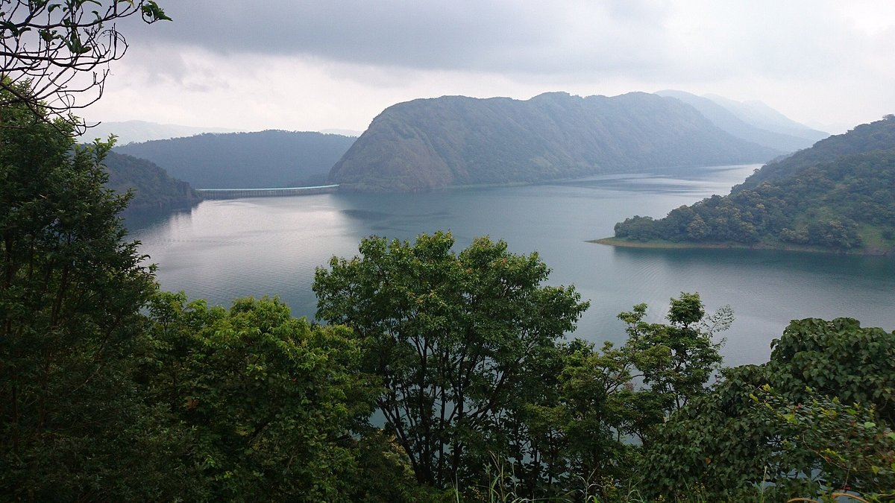

Idukki, a landlocked district of Kerala, is one of the most nature-rich areas in Kerala with more than half of the area covered with forest. This rugged hill resort is known for its wildlife sanctuaries, beautiful bungalows, tea factories, rubber plantations and forests. Idukki's speciality lies in 650 feet long and 550 feet high arch dam across the Kuravan Kurathi mountain, which is the largest in the country. Anamudi, which is the highest peak in India, south of the Himalayas, is also located in Idukki. Idukki is one of the districts in the state that has abundant scope for promotion of eco-tourism if proper infrastructure and promotional activities are provided.
DESTINATIONS Must See
|

Meesapulimala
The second highest peak in South India, Meesapulimala is an ideal spot for trekking. The starting point of the trek is Rhodovalley.
Learn moreAnchuruli Waterfalls
Situated amongst the gushing locations in Western Ghats Land and providing an enchanting view of the semi-evergreen forests grasslands.
Learn more

Cheruthoni Dam
An ideal picnic spot situated in the Idukki District of Kerala, the Cheruthoni Dam being 138 m tall is the largest concrete gravity dam close to the Idukki Arch Dam.
Learn more
Kulamavu Dam
If you're a hiking or trekking junkie, Kulamavu is a hill-station that offers the perfect terrain for an adrenaline kick.
Learn more